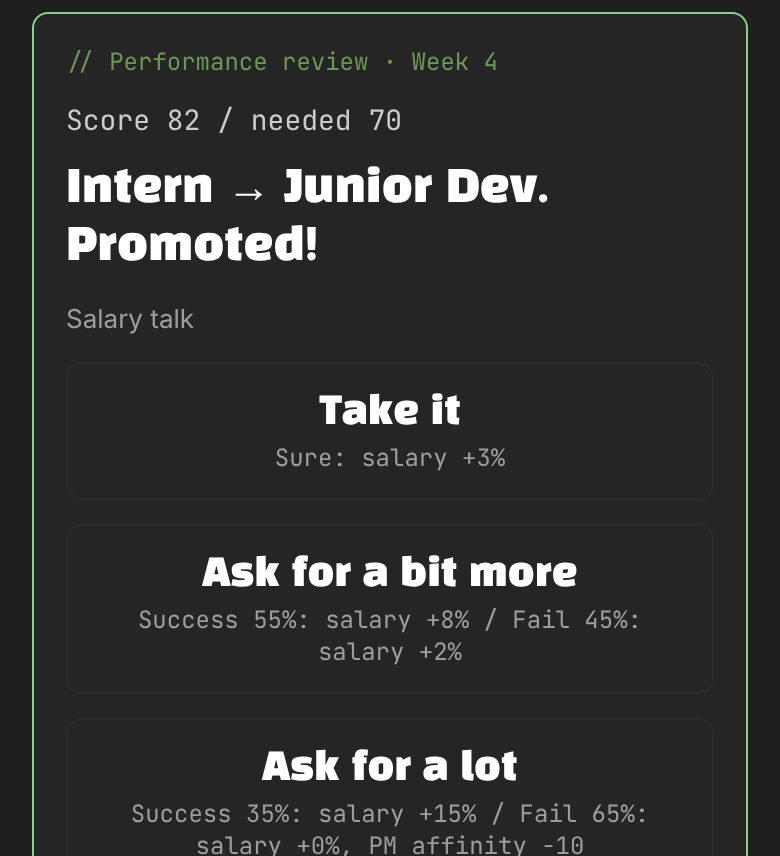
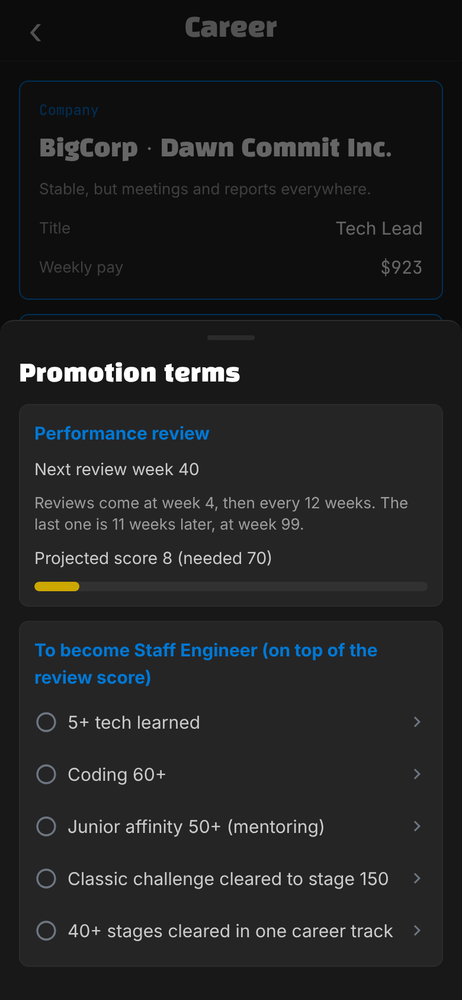
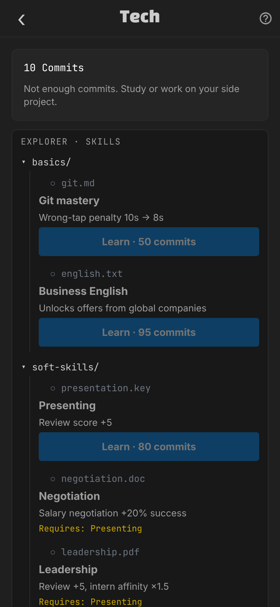
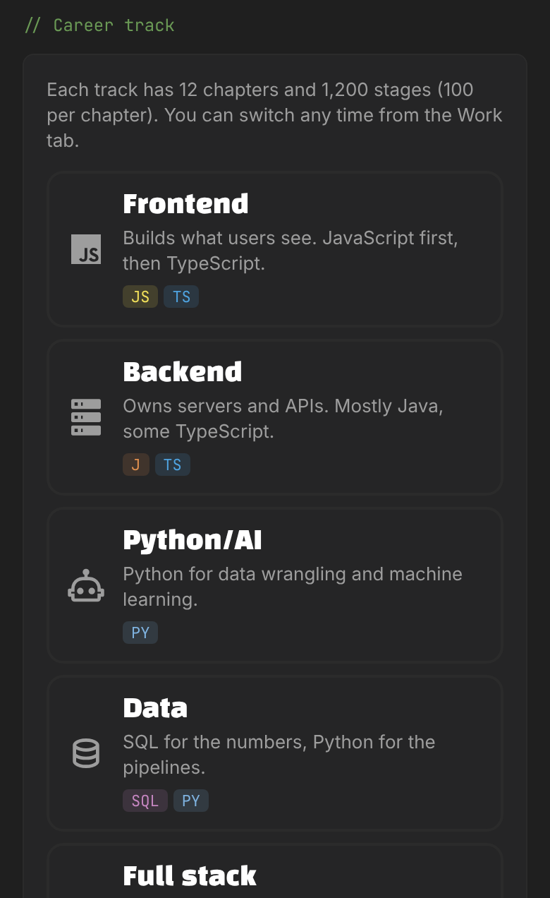
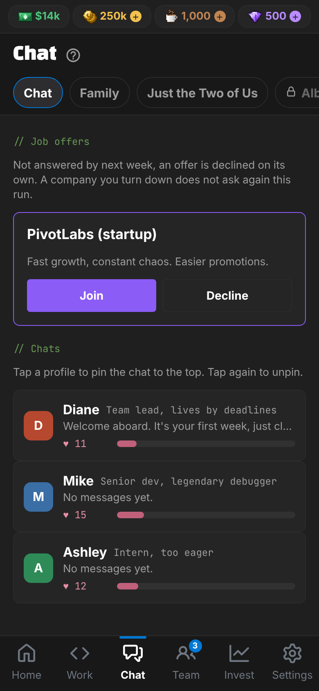
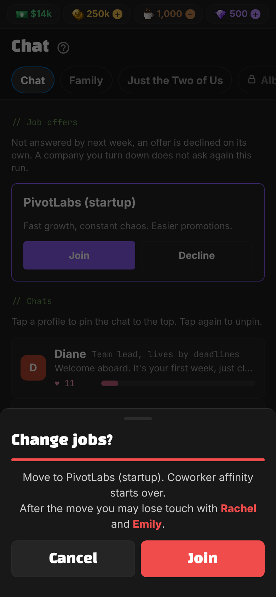

Guide › Promotions, career
Promotions, career
Promotion terms for all 10 ranks, how review scores are worked out, career tracks, the 5 companies and their sagas, and job changes
- 📋 Performance reviews happen in weeks 4, 16, 28, 40, 52, 64, 76, 88 and 99: exactly 9 times. You only go up one rank at a time, so starting as an intern you must pass all 9 to become CTO.
- 🧮 The review score weighs performance most, then reputation, then your lead's affinity. Even if your score passes, you are blocked if you have not met the promotion terms for your rank.
- 🏁 Coins and career points (CP) are paid only for runs played through all 100 weeks. Runs that end early, like startups and title endings, pay 0.
First, how a run is built 🗓️#
A run is 100 weeks. Each week you plan your schedule, solve tickets, answer messages, and tap Wrap up the week to move on. You always start as an intern at the big company, Dawn Commit Inc., with Coding 25, Focus 60, Stamina 80, Stress 20, Reputation 20, a $2,308 balance and 10 commits (run perks can raise these).
| How the run ends | Coins, CP | Endings met along the way | Counts as finished |
|---|---|---|---|
| Played all 100 weeks | Paid (by rank) | All recorded ✅ | Yes |
| Ended early with a title story ending (including the Serial founder's IPO, Founded, then flat broke and so on) | 0 | That ending only | Yes |
| Let go, Wing truck owner, a side project startup (Unicorn founder, folding) | 0 | That ending only | No |
| The End this run button on Home | 0 | Nothing stays | No |
- Career points (CP) grow with your rank (intern 20, +1 for each rank, CTO 29). +1 / +3 / +5 with the Career planning run perk.
- Coins also grow with your rank (intern 2,000, +100 for each rank, CTO 2,900). +5% per level with Severance fund.
- A founder who quit has no rank, so they are counted the same as an intern (CP 20, 2,000 coins).
- A run where you actually played (touching the screen) for less than 10 minutes gives no CP, coins, commit XP or daily quests (endings stay).
- Every ending you see for the first time gives a card pack. Normal endings give a Rare Pack, title endings an Epic Pack, and runs that ended early get them too.
Endings that showed the Ending met! banner during a run (e.g. a company saga's finale, Off to HQ, Acqui-hired) only stay in the codex if you finish all 100 weeks. If the run ends early with a title ending or a startup, only that one ending is recorded, and the banner endings you collected before are lost. If collecting is your goal, make the early-ending choice last.
There are also quiet endings that show no Ending met! banner: Just a developer, Forever mid-level, Replaced by AI, Coder turned farmer and Work-life balance master. These five only come at the final check at week 100, and they are pushed out if you meet even one higher-ranked ending (marriage, CTO, side endings and so on).
The 10 ranks and monthly pay 💼#
There are the 10 ranks below. Monthly pay is set by rank and company, and rises further as tech pay bonuses and raises pile up. Weekly pay is a quarter of the monthly pay. $346 of living costs goes out every week ($1,385 a month).
| Rank | Big company monthly pay | Startup | Foreign company | Morning Commit |
|---|---|---|---|---|
| Intern | $1,538 | $1,231 | $2,154 | $1,846 |
| Junior Dev | $2,308 | $1,846 | $3,231 | $2,769 |
| Developer | $2,615 | $2,092 | $3,662 | $3,138 |
| Senior Dev | $3,077 | $2,462 | $4,308 | $3,692 |
| Tech Lead | $3,692 | $2,954 | $5,169 | $4,431 |
| Staff Engineer | $4,308 | $3,446 | $6,031 | $5,169 |
| Principal | $5,000 | $4,000 | $7,000 | $6,000 |
| Director | $6,154 | $4,923 | $8,615 | $7,385 |
| VP of Eng | $7,692 | $6,154 | $10,769 | $9,231 |
| CTO | $11,538 | $9,231 | $16,154 | $13,846 |
The table shows monthly pay with no tech or raise bonuses at all. Freelancers have no monthly pay and are calculated separately (see Freelance).
- 💰 Tech pay bonuses: TypeScript +3%, React +5%, Java +3%, Cloud +5% (+16% with all of them).
- 📈 What you gain in salary negotiations and +5% for every job change keep piling up.
- 🎖️ The Born negotiator run perk raises weekly pay by +5% / +10% / +15%.
- 🎫 Tickets get harder as you rise: intern and Junior Dev stage 1, Developer and Senior Dev stage 2, Tech Lead to Principal stage 3, and Director up stage 4.
How the review score is worked out 📋#

Review bars (pass this score to be up for promotion)#
Only intern to Junior Dev is fixed at 30; after that it starts at 55 and goes up 5 for each rank. The startup is 6 lower and easier, the foreign company 4 higher and tighter.
| Current rank → next | Big company, Morning Commit | Startup | Foreign company |
|---|---|---|---|
| Intern → Junior Dev | 30 | 30 | 30 |
| Junior Dev → Developer | 55 | 49 | 59 |
| Developer → Senior Dev | 60 | 54 | 64 |
| Senior Dev → Tech Lead | 65 | 59 | 69 |
| Tech Lead → Staff Engineer | 70 | 64 | 74 |
| Staff Engineer → Principal | 75 | 69 | 79 |
| Principal → Director | 80 | 74 | 84 |
| Director → VP of Eng | 85 | 79 | 89 |
| VP of Eng → CTO | 90 | 84 | 94 |
What decides the review score?#
The score weighs performance most, then reputation, then your lead's affinity. Bonuses are then added as is.
- Performance looks at the performance you made each week since the last review. Making 12 performance every week steadily gives full marks.
- Reputation and your lead's affinity are their values at the moment of the review.
- Bonuses (all of them add up):
- Presenting skill +5, Leadership skill +5
- Business English at the foreign company +3
- The Planner app subscription gear +3
- Side project at 50 or more +3, and +3 more at 100 or more
- The Born presenter run perk +2 / +4 / +7
- The Family person love effect while parenting after marriage +3
A Senior Dev at the big company (bar 65) with an average weekly performance of 10.3, reputation 50 and lead affinity 60 scores 70 and passes. Just one Presenting skill adds +5 and gives you far more room.
Where does weekly performance come from?#
- Work 1.2 a day, Overtime 2.2 a day (it differs by company: the startup builds more, the big company and Morning Commit a bit less).
- Tickets: S 6, A 4, B 2, C 1 (a little different by company). Fail a ticket and it is performance −3, reputation −3, lead affinity −5, stress +3.
- Team project wins: ★1 1.5, ★2 2.5, ★3 4 (up to 6 a week).
- Some message replies add performance too.
- Day effects: the same Work, Overtime, Study or Side 3 days in a row gives +20% from day 3, Monday −10%, Friday +10%, Work or Overtime the day after Overtime is −30% performance and reputation, weekend slots are ×1.4, and performance is ×1.5 in a review week.
Here is one week per schedule, worked out with the day effects (big company, not a review week, no gear, run perks or messages).
| Schedule (Mon to Fri, weekend) | Schedule performance | + S ticket | Stress/week | Stamina/week |
|---|---|---|---|---|
| Default schedule: Work, Work, Study, Work, Work, Rest | 4.32 | 9.72 | +10.2 | −10.8 |
| Team lunch, Work, Work, Work, Work, Rest | 4.88 | 10.28 | −6.8 | −8.8 |
| Team lunch, Work, Work, Work, Study, Rest | 3.46 | 8.86 | −8.8 | −5.8 |
| Work 5 days, Rest | 6.07 | 11.47 | +12.2 | −13.8 |
| Work, Overtime, Rest, Work, Overtime, Rest | 6.21 | 11.61 | +9.2 | −10.8 |
| Overtime 5 days, Rest | 8.32 | 13.72 | +32.2 | −38.8 |
Stress includes the company's weekly addition (big company +2). In a review week, schedule performance is ×1.5, so the same schedule gets much stronger (e.g. Team lunch, Work ×4, Rest → 7.32).
The default schedule you start with (Work, Work, Study, Work, Work, Rest) adds about +10 stress every week. Leave it alone and burnout comes within a few weeks, and 3 burnouts end the run with the Wing truck owner ending. Stick with the default and it is a 100% chance of the Wing truck owner ending through 3 burnouts (usually around week 35, week 28 at the earliest).
- 🍜 Team lunch once every week: lead affinity +6, stress −15. If your lead's affinity is 50 or more and there is no lunch that week, it is −3. From 80 up, expectations make it −2 every week, so lunch is a must.
- ⭐ In a review week (weeks 4, 16, 28…), performance from your schedule (Work, Overtime) is ×1.5. Pack Work into those weeks.
- 🎤 Presenting (80 commits) is worth +5 in reviews, so it is the one to learn first. Leadership (160, needs Presenting) is +5 too.
- 🚀 Grow your side project to 50 for review +3, or +6 at 100.
- 🎫 Solve tickets yourself and aim for S. Rush it tops out at A, and from 3 weeks in a row the score drops by 15 each time. At stress 70 or more you cannot use it at all.
Salary negotiation: which button pays off? 💸#
After a review, the salary negotiation comes whether or not you were promoted. The odds are written right on the buttons.
| Button | Success chance | If promoted | If not promoted | If it fails |
|---|---|---|---|---|
| Take it | 100% | +3% | +1% | None |
| Ask for a bit more | 55% (75% with the Negotiation skill) | +8% | +3% | Still +2% |
| Ask for a lot | 30 to 55%, higher with more reputation (+20 points with the Negotiation skill) | +15% | +6% | 0%, lead affinity −10 |
Ask for a bit more still gives +2% when it fails, so you never lose. It always beats Take it. Ask for a lot averages higher but costs lead affinity, and since lead affinity 90 to 100 is a promotion term from Principal up, Ask for a bit more is the safe pick at high ranks.
Promotion terms by rank, all in one place 📶#

You are promoted when your review score passes the bar and you meet all the conditions below. If only the score passes, you see Your score was enough, but you're missing promotion terms.
| Next rank | In-run conditions | Out-of-run conditions (past records count) |
|---|---|---|
| Junior Dev | Coding 20, Focus 10, Stress 80 or less | None |
| Developer | 1 skill, Coding 30, Focus 20, Stress 80 or less | None |
| Senior Dev | 2 skills, Coding 40, Reputation 20, Stress 80 or less | None |
| Tech Lead | 3 skills, Reputation 40 | None |
| Staff Engineer | 5 skills, Coding 60, junior (intern) affinity 50 | Classic challenges up to stage 150, 40+ stages in one career track field |
| Principal | 7 skills, Reputation 60, lead affinity 90 | Classic up to stage 300, Full stack chapter 9 stage 80 in Career tracks |
| Director | The Leadership skill, lead affinity 95 | Clear Survival on Normal, Classic up to stage 370, Frontend chapter 10 stage 85 in Career tracks |
| VP of Eng | 10 skills, Reputation 75, Coding 75, lead affinity 100 | Classic up to stage 440, Backend chapter 11 stage 90 in Career tracks |
| CTO | All 11 skills, Reputation 100, Coding 100, lead affinity 100, S rank on 95% or more of tickets this run | ★★★ on all Classic stages 1 to 500, ★★★ on every stage of all 5 career track fields, ★★★ on open-source team project #12 Framework 2.0 |
Up to Tech Lead you only need things inside the run, but from Staff Engineer you need Classic and Career track records. Grind runs only and you stall at Tech Lead. Keep pushing Classic stages and Career tracks outside your runs. Records count whichever run you cleared them in.
There are 9 reviews and each promotes you 1 rank. Start as an intern and you cannot slip even once. Have the conditions ready from the first review in week 4 (bar 30). Starting as Junior Dev or Developer with the Experienced hire run perk (200 / 400 CP) gives you 1 or 2 to spare.
The 11 skills (learned with commits)#

| Skill | Commits | Needs first | Effect |
|---|---|---|---|
| Git mastery | 50 | - | Wrong-tap penalty 10s → 8s |
| TypeScript | 65 | - | TS tickets, pay +3% |
| Python | 65 | - | Python tickets |
| SQL | 65 | - | SQL tickets |
| Presenting | 80 | - | Performance review +5 |
| Java | 80 | - | Java tickets, pay +3% |
| Business English | 95 | - | Lets you get foreign company offers (review +3 at the foreign company) |
| Negotiation | 95 | Presenting | Salary negotiation success +20% |
| React | 95 | TypeScript | Side project ×1.2, pay +5% |
| Cloud | 130 | SQL | Stress −1 every week, pay +5% |
| Leadership | 160 | Presenting | Performance review +5, intern affinity rises ×1.5 (required for Director) |
980 commits in total learns all 11. Study (5 commits a day) is fastest. Learn all 11 and the Legendary architect ending comes along too.
The 5 Career track fields 🛤️#

Career tracks are the code review (O/X) mode. Each field has 12 chapters of 100 stages each, 1,200 stages, and 6,000 across all 5 fields. Every chapter is open from the start, and inside a chapter the stages open one at a time.
| Field | Language | Chapters (1 → 12) |
|---|---|---|
| Frontend | JavaScript, TypeScript | First button, Form validation, Rendering lists, State management, Calling APIs, Routing, Adding types, Component design, Performance, Design system, Big refactor, Frontend lead |
| Backend | Java, TypeScript | Hello server, REST API, Database access, Auth, Transactions, Caching, Batch jobs, Message queues, Splitting services, Incidents, High traffic, Backend lead |
| Python/AI | Python | Python basics, Lists and dicts, Files, Scraper, Preprocessing, Plots, First model, Feature engineering, Deep learning, LLM integration, Model serving, AI lead |
| Data | SQL, Python | SELECT, Joins, Aggregates, Subqueries, Schema design, Migrations, ETL, Dashboards, Warehouse, Streaming, Data quality, Data lead |
| Full stack | JavaScript, TypeScript, Python, Java, SQL | Side project, Landing page, Sign-up, Payments, Admin panel, Analytics, Notifications, Search, Recommendations, Global launch, Scale-up, CTO |
- ⭐ Stages 1 to 80 give stars by accuracy: 80% or more ★★★, 60% or more ★★, below that ★. Guessing at random (about 50%) gets one ★.
- 🔥 Stages 81 to 100 are the hell zone and give stars by time. Errors grow from 100 to 1,000, and each wrong answer adds 30 seconds.
- ☕ 1 coffee for each new star (up to 3 per stage).
- 📈 Stages used for promotions: Staff Engineer (40 stages in any field), Principal (Full stack chapter 9 stage 80), Director (Frontend chapter 10 stage 85), VP of Eng (Backend chapter 11 stage 90), CTO (★★★ on every stage of every field).
The Staff Engineer condition 40 stages in one field is the number of stages cleared in that field, whatever the chapter. And the Principal to VP conditions do not need every chapter from 1: you only need to clear that stage of that chapter (stages open one at a time inside a chapter, so you must clear them in order up to it). The Career track strategy itself is in Getting started.
The 5 companies compared 🏢#
| Company | Pay multiplier | Weekly stress | Performance multiplier | Side multiplier | Review bar | How to get in |
|---|---|---|---|---|---|---|
| Big company, Dawn Commit Inc. | ×1 | +2 | ×0.9 | ×1 | 0 | Where every run starts (overtime pay $23 a day) |
| Startup, PivotLabs | ×0.8 | +4 | ×1.2 | ×1.3 | −6 | Recruiter (week 12 on, Coding 90) |
| Foreign company, GlobalTech Branch | ×1.4 | +3 | ×1 | ×1 | +4 | Recruiter (week 16 on, Business English + Coding 90) |
| Morning Commit | ×1.2 | +2 | ×0.9 | ×1 | 0 | Recruiter's big company experienced hire (week 20 on, after leaving the first company) |
| Freelancer | No monthly pay | +1 | ×1 | ×1.2 | No promotions | Recruiter (week 24 on, reputation 70, runs with no title) |
- Startup: the easiest promotions, but pay ×0.8 and stress +4. It is where you meet the secret-dating heroine Claire.
- Foreign company: the best pay at ×1.4. Reviews are tight, but there is the +3 English bonus. Where Sophie works.
- Morning Commit: the rival big company. Pay ×1.2, and the strictest internal audits in the industry. Instead of a company saga, the story is auditor Angie's audit. If suspicion hits 100, the run ends that week with a disciplinary firing, so be careful.
Job changes and recruiters 🤝#
Recruiter messages only come on the week close screen. Tap Hear the offer and the company appears in Job offers at the top of the Messenger tab, where you pick Join or Decline.

| Offer | When it comes | How it comes |
|---|---|---|
| Startup, PivotLabs | Week 12 on, Coding 90 or more, never been at the startup | Always, in the first week the conditions are met |
| Foreign company, GlobalTech Branch | Week 16 on, Business English, Coding 90 or more, never been at the foreign company | Always, in the first week the conditions are met |
| Morning Commit (big company experienced hire) | Week 20 on, currently at the startup, freelancing or at the foreign company, never been at Morning Commit | Always, in the first week the conditions are met |
| Freelancer | Week 24 on, reputation 70 or more, a run with no title | Always, in the first week the conditions are met, once per run |
| Overseas HQ (→ foreign company offer) | Week 60 on, Business English, Coding 75 or more | Now and then, at random |
| Counter-offer | Week 30 on, reputation 55 or more | Now and then, at random. Negotiate for a 60% chance of +$1,154 and lead −5; failing is lead −10, stress +6 |
Offers can also come from company saga choices (the big company's Quietly update your resume → the foreign company, the startup payout → another company, and so on).

What changes when you change jobs#
- ✅ You keep your rank. Accumulated raises +5% (none when going freelance).
- 🔄 Coworker affinity at the new company starts over at 5 to 15, and this quarter's performance resets too. Lead affinity is 20% of the review score and lead affinity 90 to 100 is a condition from Principal up, so the higher your rank, the harder the review right after a job change.
- 👋 People from your previous company (lead, senior, junior, HR, CEO) vanish from the messenger right away.
- 💔 Company heroines: Rachel and Emily at the first company, Sophie at the foreign company and Angie at Morning Commit lose touch unless they are at least a crush. Claire at the startup is over once you leave the startup.
- 🚫 A company you have left cannot be joined again this run. Offers you declined or never answered do not come again either.
The foreign company offer conditions (Business English + Coding 90) are the same as the Off to HQ ending conditions (at the foreign company + Coding 90 + Business English). The moment you join the foreign company through a recruiter, Ending met! appears. Finish the 100 weeks and it stays in the codex.
Company sagas: every company has its big incident 🎬#
The big company, startup, foreign company and freelancing each have a story running from week 6 into the 60s. The stages open at roughly weeks 6 → 16 → 28 → 40 (38) → 54 (50) → 62, and your earlier choices decide the finale. The finales are endings met along the way, so the run goes on.
- Saga messages are important messages you must answer before the week moves on. Leave one on read and that company's story is over for this run.
- Change jobs midway and the saga stops (that company's condition no longer fits). Quitting as a Serial founder means no saga comes either.
- What each stage sets is the earliest week. At a company you joined by changing jobs, if those weeks have already passed, the stages come in order from the start after you join.
- Morning Commit has no saga. Angie's audit goes on instead.
Big company, Dawn Commit Inc.: the great payment outage#
It starts with a payment outage in the small hours of week 6, then the blame game (week 16) → the audit (week 28) → the TF lead offer (week 40) → the finale in week 54.
Spoiler: the big company saga's 3 finales and its branches
- Week 6 outage: Log in in your pajamas and roll back yourself succeeds 60% of the time (the next stage opens even if it fails), Call Mike, the senior dev, or Fill in the incident-notice template first.
- Week 16 blame game: "Yes, go ahead" (blame the intern, intern affinity −25), "I was on call…" (take responsibility), expose the legacy module 50% (if it fails, it counts as taking responsibility).
- Week 28: if you blamed the intern, in the audit admit it and apologize (discipline) / reveal "It was the team lead's idea" 50% / Stick to "I don't recall" 35%. Failing means discipline. Otherwise, a normal audit.
- Week 40 TF lead (when not disciplined): Accept succeeds 75% of the time.
- Condition
- Get through the audit without discipline and succeed at Accept for the week 40 TF lead → the special promotion message in week 54.
- Reward
- $2,308 or $1,154 + reputation, depending on your reply. Your rank does not go up.
- Condition
- Get through the audit without discipline and politely decline the TF lead, or accept and fail → the week 54 message. Pick Quietly update your resume and a foreign company offer comes too.
- Condition
- Blame the intern → discipline in the audit → Accept it and move down in the week 54 regional transfer message. Pick Quit and join a startup and you move straight to the startup with no ending.
Startup, PivotLabs: from demo to exit#
Week 6 investor demo → week 16 fundraising → week 26 crunch → week 38 burnout crisis or pay cut → week 50 acquisition offer → week 62 finale.
Spoiler: the startup saga's 3 finales and its branches
- In week 16 fundraising, Ask for more stock options (60% success) is the key to the big exit.
- Week 26 crunch: Grind it out or a failed Build deploy automation with Ashley (45%) leads to the senior's burnout story in week 38, otherwise to the pay cut story.
- Week 50 acquisition offer: For it or a successful Counter-offer: keep the service alive (45%) means a sale; Against or a failed counter-offer means a pivot.
- Condition
- Secure stock options + sell in week 50 → the payout message in week 62.
- Reward
- A $23,077 payout. Report to the acquiring company comes with a job offer, and Take the payout and rest a while is 2 weeks of rest.
- Condition
- Sold without stock options → the employment succession message in week 62.
- Reward
- $2,308 + an offer from another company.
- Condition
- Against the week 50 acquisition or a failed counter-offer → the pivot message in week 62. Stay to the end at 40% gives +$7,692.
Foreign company, GlobalTech Branch: the relocation rumor#
Week 6 town hall → week 16 relocation rumor → week 28 voluntary retirement notice → week 40 union meeting, HQ 1:1 or toughing it out → finale in week 54.
Spoiler: the foreign company saga's 4 finales and its branches
- At the week 28 voluntary retirement notice, Sign the union-founding petition = the union route.
- If week 16 Push PRs to HQ repos (70%) or week 28 Volunteer for the hub transition task force (50%) succeeds and you did not sign the union petition, you get the HQ 1:1 in week 40. There, Go all in, in English succeeds 60% of the time for an HQ offer.
- If neither, it is week 40 Tough it out / Call a recruiter (a startup offer; none if you have already been at the startup) → the branch closes in week 54.
- Condition
- Sign the union petition → week 40 union meeting → week 54 bargaining message (any reply).
- Condition
- HQ PRs or the transition task force succeed → Go all in, in English succeeds in the 1:1 → Sign it in the week 54 offer (+$3,846).
- Condition
- Go the same way to the HQ offer and Decline, for the colleagues left at the branch.
- Condition
- No union petition and no HQ offer → the branch closing message in week 54 (any reply).
Freelance: the online shop contract and the unpaid balance#
Week 6 online shop contract → week 16 extra features → week 28 unpaid balance → week 40 lawsuit, victims' group or a new contract → finale in week 54. You can only be a freelancer in runs with no title, so this saga is for runs with no title only.
Spoiler: the freelance saga's 2 finales and its branches
- In week 6, "Contract and a 30% deposit first" succeeds 60% of the time and secures the contract (+$6,923) → it helps in the week 40 lawsuit.
- Week 28 unpaid balance: Send a formal demand letter = the lawsuit route, Post the story on a dev community = the victims' group route, Formally notify them that maintenance stops at 45% gets you $16,154 right away and the new contract route.
- Condition
- Every path where you did not lead the victims at the week 40 stage → the week 54 agency offer (any reply: agency / full-time offer / rate raise).
- Condition
- Post the story on the community in week 28 → Take the lead in the week 40 message from 12 victims → win the class action in week 54 (+$16,154).
FAQ#
- My score passed the bar, but I wasn't promoted.
- One of the rank's conditions is missing. Tap your rank on Home, open Promotion terms on the Career screen and check which lines are not met yet. From Staff Engineer up you need Classic stage and Career track records, so you cannot meet them inside a run alone.
- Does my rank reset when I change jobs?
- No. Your rank stays and accumulated raises get +5%. But coworker affinity and this quarter's performance start over.
- The freelance offer isn't coming.
- It never comes in runs with a title. With no title, it comes the week your reputation passes 70 after week 24. Only once per run, and declining or leaving it on read ends it.
- I want to found a startup, but Quit and go all in won't let me tap it.
- You need $15.4K in the bank. It is not taken out, only checked. Get there with the Family support run perk, saving by cutting lunches, or seed investment.
- If Series A or the IPO fails, do I get another chance?
- No. Series A (week 34) and the IPO (week 60, 20%) come once per run. Fail and it is over for that run.
- I ended early with a title ending and got 0 coins.
- Coins and CP are only paid for runs played through all 100 weeks. Instead, a title ending you see for the first time gives an Epic Pack, and it counts toward your finished runs.
- A company saga ending showed up, but it isn't in my codex.
- Saga finales are endings met along the way, so they only stay in the codex once you finish the 100 weeks. If the run ends earlier with a title ending or a startup, they are lost.